Aprendizagem Automática
7. Naïve Bayes classifier
Ludwig Krippahl
Naïve Bayes
Summary
- Bayes Rule
- Bayes Classifier
- Naïve Bayes classifier
- Comparing classifiers
Aprendizagem Automática
Bayes' Rule
Bayes' Rule
Sum rule and marginal probability
- Given two random variables
X andY - This is the sum rule, giving the marginal probability
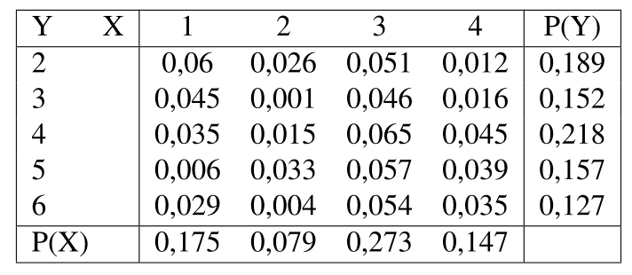
Bayes' Rule
Product rule and joint probability
- The conditional probability of
Y=yj given thatX=xi is the fraction ofp(X=xi,Y=yj) inp(X=xi)
Summarizing:
Bayes' Rule
Bayes' rule
- Since
p(Y,X)=p(X,Y) , applying the product rule
Bayes' Rule
Frequentist interpretation
- Probability is frequency over infinite trials
- Bayes rule simply relates different frequency estimates:
Bayesian interpretation
- Probability measures (rational) certainty about truth of hypotheses
- Bayes' rule gives posterior probability from prior and evidence:
Bayes' Rule
For classification
- We can consider the conditional probability of an example with features
x belonging to classc to be:p(C=c|X=x)=p(C=c)p(X=x|C=c)p(X=x) - Frequentist interpretation:
- Frequencies over infinite trials
- Bayesian interpretation:
- Confidence on hypothesis given the data
- Either way, we have to estimate these probabilities from the data
Aprendizagem Automática
Bayes Classifier
Bayes Classifier
To classify, find most probable class:
- (probable in the bayesian sense)
- Since
p(X=x) is independent ofc , simplify to: - And since
- all we need is the joint distribution of the classes and the feature value combinations.
Bayes Classifier
To classify, find most probable class:
- The Bayes Classifier is the ideal classifier
- If we know the joint distribution of classes and feature combinations we minimize the error.
- (That's the problem)
Bayes Classifier
Example: predict diabetes
- Questionnaires with 20 yes/no questions (food, exercise, etc..)
- Total of
220∼ 1 million combinations - We need (many) millions of examples to estimate
P(C,X) - The full Bayes Classifier is not practical
- We never have enough data to estimate the joint probability for all combinations of features
Aprendizagem Automática
Naïve Bayes Classifier
Naïve Bayes Classifier
Assume conditional independence given class
- Example: the time two people arrive home are not independent variables because a strike affects both.
- But if we know that there was a strike, these variables become independent.
- This makes it easier to estimate the probabilities
Applying the product rule to p(C,X)
- But conditional independence given the class means that
p(xn|Ck,x1,x2,...,xn−1)=p(xn|Ck)
Naïve Bayes Classifier
So it all simplifies to:
- Taking the logarithm:
The Naïve Bayes Classifier is:
Naïve Bayes Classifier
To train the Naïve Bayes Classifier:
- For each class, find the log probability distribution of features
- For each class, find the log of the prior probability
To classify:
- Find class for which the sum of the feature logs, plus the log of the prior, is greatest
Naïve Bayes Classifier
Example: predict diabetes
- Questionnaires with 20 yes/no questions (food, exercise, etc..)
- Split into healthy and diabetic
- Count yes/no fraction for each question in each class
- Predict: log fraction of healthy to diabetic (prior) plus sum of log feature fraction for each class
Aprendizagem Automática
NB: example 1
NB, continuous
- Data set with two continous features and two classes
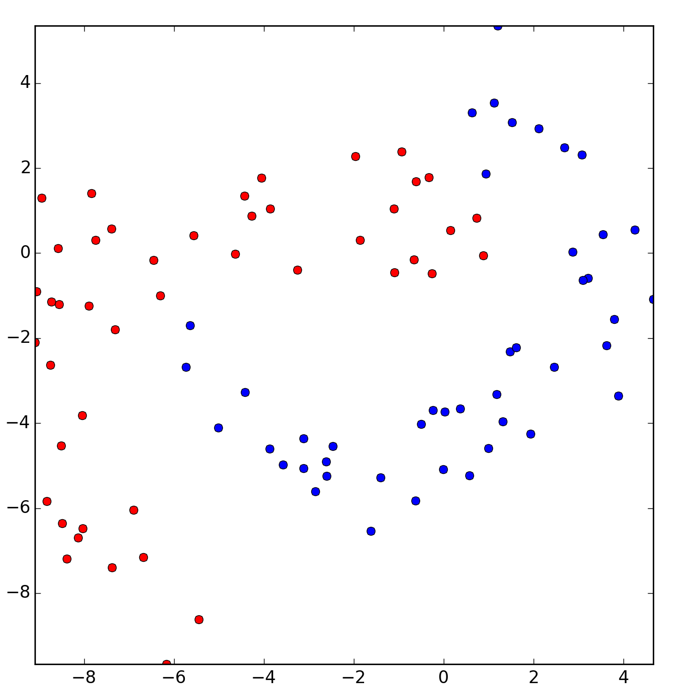
NB, continuous
Finding the distributions
- Parametric method: assume some distribution (e.g. Normal) and compute the parameters (e.g. mean and standard deviation):
- Non-Parametric method: do not assume distribution. E.g. KDE.
Parametric vs Non-parametric
- Parametric models: completely defined by the chosen parameters
- Non-Parametric need additional data (e.g. k-NN, KDE).
- (Naïve Bayes can be either)
NB, continuous
- In our case, we'll choose a KDE
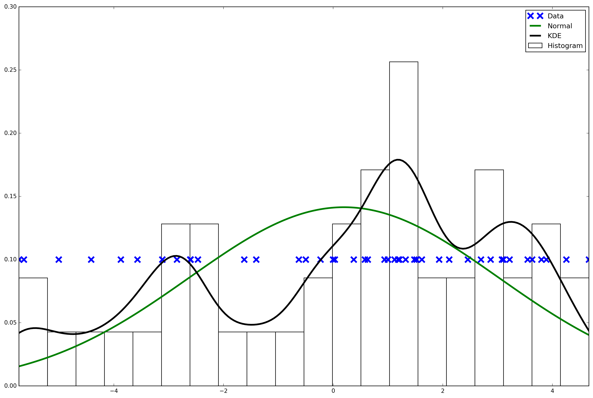
NB, continuous
- KDE for one feature, both classes:
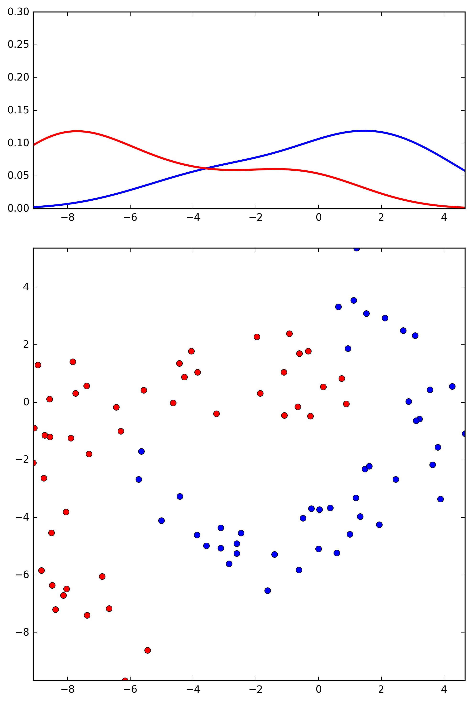
NB, continuous
- KDE for both features, both classes:
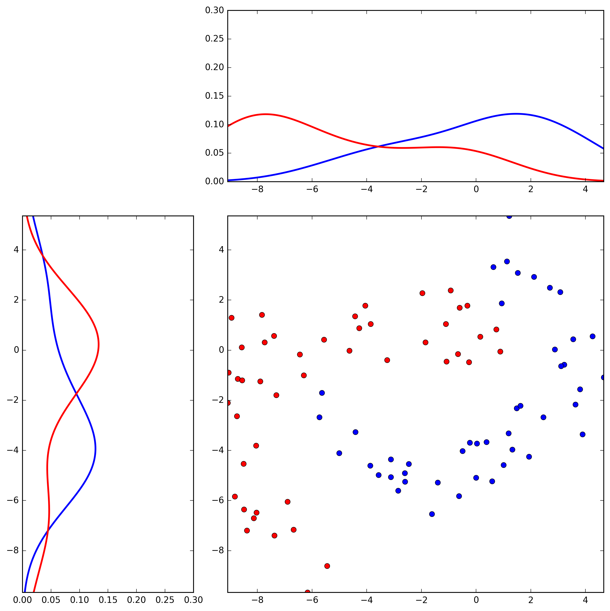
NB, continuous
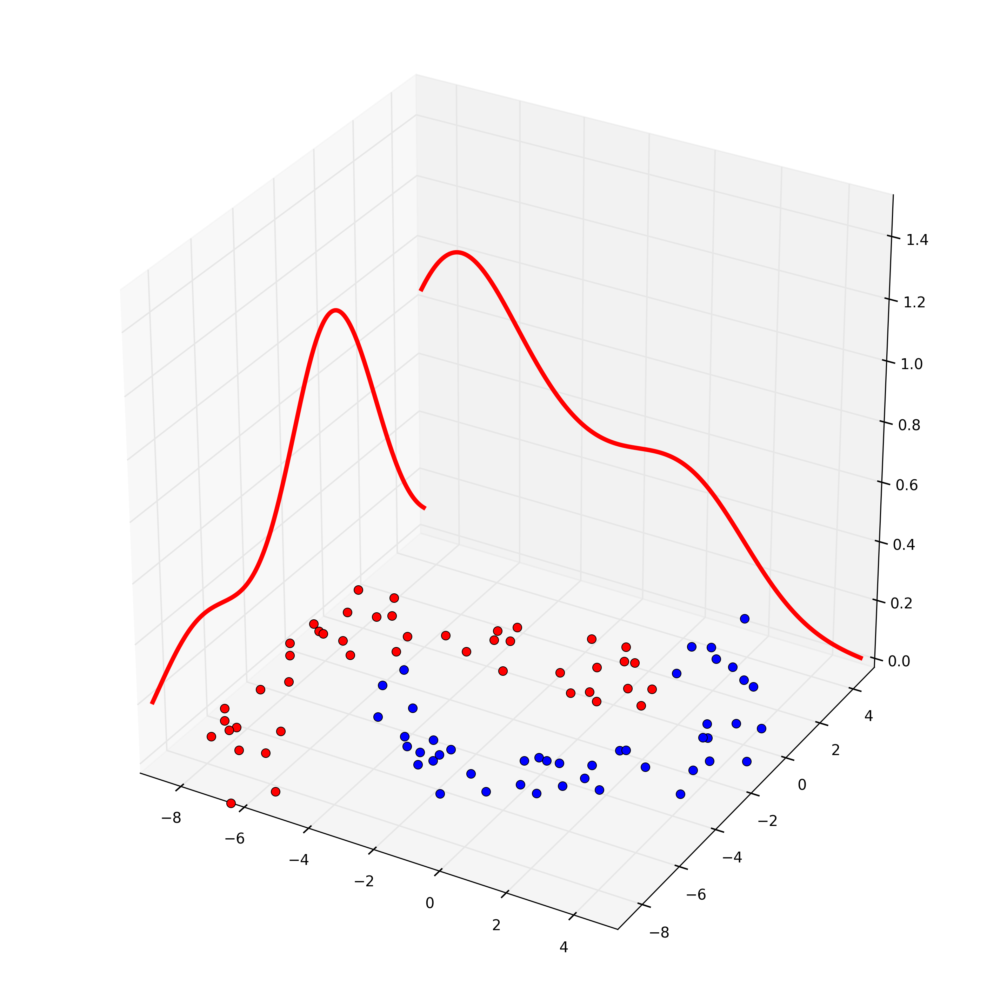
NB, continuous
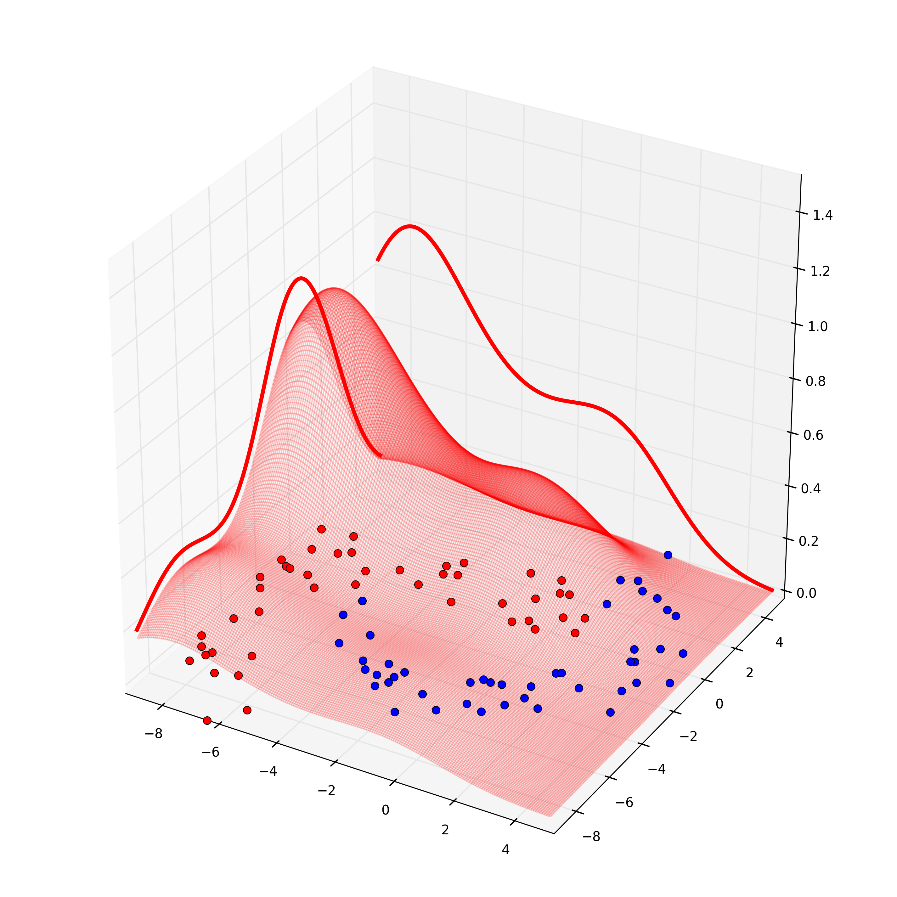
NB, continuous
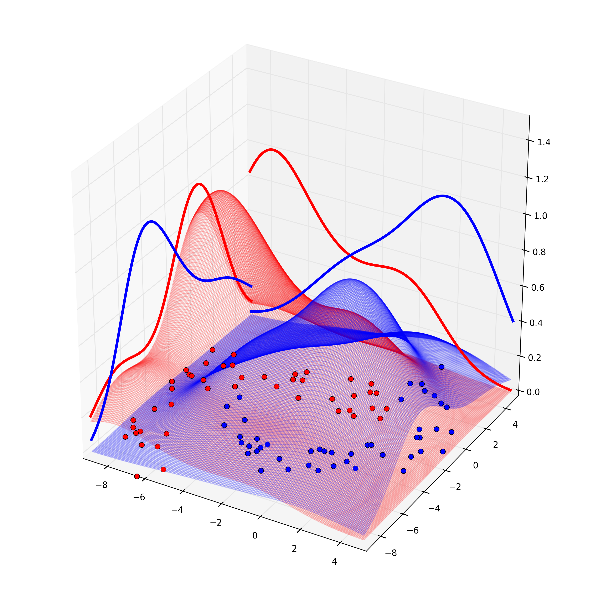
NB, continuous
- We need to adjust the kernel width

NB, continuous
- Cross-validation (10-fold)
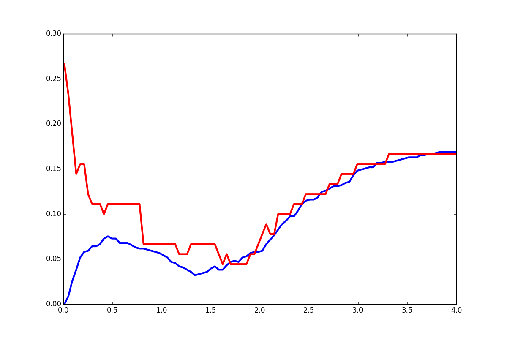
NB, continuous
- Final result
- (
h=1.8 )
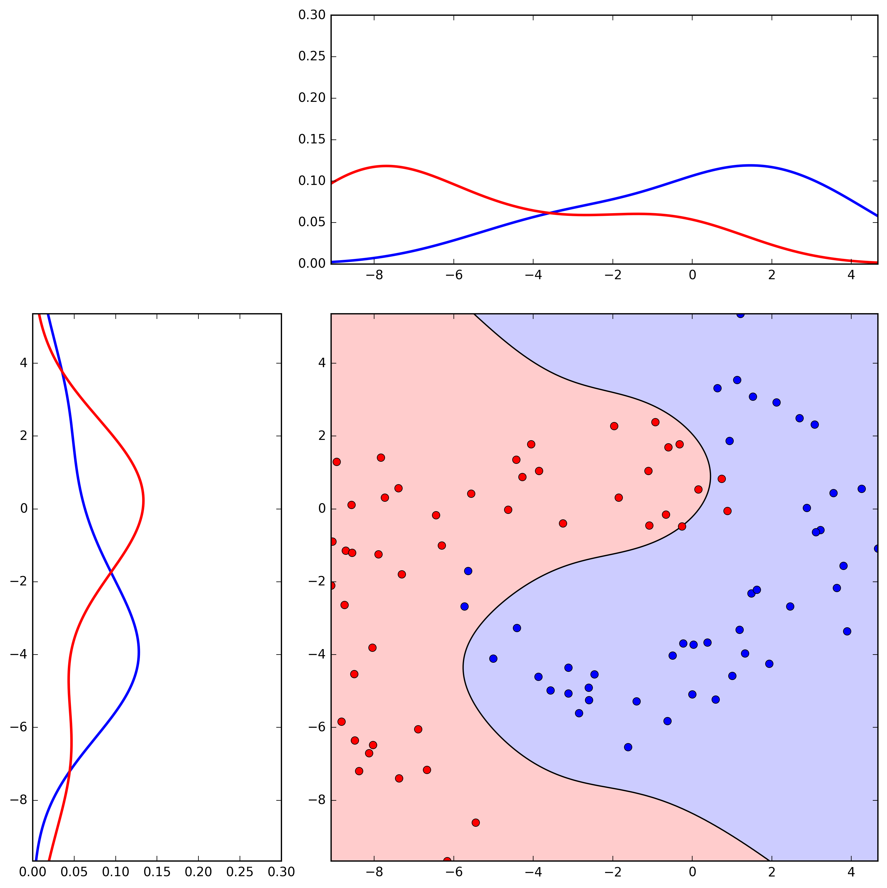
Aprendizagem Automática
NB: example 2
NB, categorical
Mushroom edibility
- Data set with mushroom features and class (poisonous, edible)
- From http://archive.ics.uci.edu/ml/datasets/Mushroom
1. cap-shape: bell=b,conical=c,convex=x,flat=f,knobbed=k,sunken=s 2. cap-surface: fibrous=f,grooves=g,scaly=y,smooth=s 3. cap-color: brown=n,buff=b,cinnamon=c,gray=g,green=r,pink=p,purple=u,red=e,white=w,yellow=y 4. bruises?: bruises=t,no=f 5. odor: almond=a,anise=l,creosote=c,fishy=y,foul=f,musty=m,none=n,pungent=p,spicy=s 6. gill-attachment: attached=a,descending=d,free=f,notched=n 7. gill-spacing: close=c,crowded=w,distant=d 8. gill-size: broad=b,narrow=n 9. gill-color: black=k,brown=n,buff=b,chocolate=h,gray=g,green=r,orange=o,pink=p,purple=u,red=e,white=w,yellow=y 10. stalk-shape: enlarging=e,tapering=t 11. stalk-root: bulbous=b,club=c,cup=u,equal=e,rhizomorphs=z,rooted=r,missing=? 12. stalk-surface-above-ring: fibrous=f,scaly=y,silky=k,smooth=s 13. stalk-surface-below-ring: fibrous=f,scaly=y,silky=k,smooth=s ... 21. population: abundant=a,clustered=c,numerous=n,scattered=s,several=v,solitary=y 22. habitat: grasses=g,leaves=l,meadows=m,paths=p,urban=u,waste=w,woods=d
NB, categorical
Data set on mushroom edibility (poisonous, edible)
p,x,s,n,t,p,f,c,n,k,e,e,s,s,w,w,p,w,o,p,k,s,u e,x,s,y,t,a,f,c,b,k,e,c,s,s,w,w,p,w,o,p,n,n,g e,b,s,w,t,l,f,c,b,n,e,c,s,s,w,w,p,w,o,p,n,n,m p,x,y,w,t,p,f,c,n,n,e,e,s,s,w,w,p,w,o,p,k,s,u e,x,s,g,f,n,f,w,b,k,t,e,s,s,w,w,p,w,o,e,n,a,g [...]
- Note: for real applications, you can use the implementation of Naïve Bayes in the Scikit-learn library
- For the assignment you will implement your NB classifier.
- For the assignment, with continuous features, use KDE
- In this example we have categorical features, so we just compute the logarithms of the fractions
NB, categorical
List features values, adding "?"
def get_features():
lines = open('agaricus-lepiota.features').readlines()
features = []
for lin in lines:
ft_vals = '?'
fragments = lin.split('=')
for frag in fragments[1:]:
ft_vals = ft_vals+frag[0]
features.append(ft_vals)
return features1. cap-shape: bell=b,conical=c,convex=x,flat=f, knobbed=k,sunken=s 2. cap-surface: fibrous=f,grooves=g,scaly=y,smooth=s [...] 21. population: abundant=a,clustered=c,numerous=n, scattered=s... 22. habitat: grasses=g,leaves=l,meadows=m,paths=p, urban=u,...
NB, categorical
List features values, adding "?"
def get_features():
lines = open('agaricus-lepiota.features').readlines()
features = []
for lin in lines:
ft_vals = '?'
fragments = lin.split('=')
for frag in fragments[1:]:
ft_vals = ft_vals+frag[0]
features.append(ft_vals)
return featuresIn : get_features()
Out:
['?bcxfks', '?fgys', '?nbcgrpuewy', '?tf', '?alcyfmnps', '?adfn',
'?cwd', '?bn', '?knbhgropuewy', '?et', '?bcuezr?', '?fyks', '?fyks',
'?nbcgopewy', '?nbcgopewy', '?pu', '?nowy', '?not', '?ceflnpsz',
'?knbhrouwy', '?acnsvy', '?glmpuwd']NB, categorical
- Load data and shuffle rows
def load_data(features,class_codes):
lines = open('agaricus-lepiota.data').readlines()
feat_vals = np.zeros((len(lines),22)).astype(int) # to store indexes
classes = np.zeros(len(lines))
for row,lin in enumerate(lines):
s = lin.replace(',','').strip()
classes[row] = class_codes.index(s[0])
for column,fv in enumerate(s[1:]):
feat_vals[row,column] = features[column].index(fv)
ixs = list(range(feat_vals.shape[0]))
np.random.shuffle(ixs)
return feat_vals[ixs,:],classes[ixs]- Note: take care not to scramble features and class labels
NB, categorical
- Build "histogram" with
lnp(xi|Cc) - (count frequencies)
- What to do if some feature does not appear?
p(xi|Cc)=0 . - Solution:additive smoothing
- (we'll use
α=1 )
def make_hists(data,features):
hists = []
for feat in features:
hists.append(np.ones(len(feat)))
for row in range(data.shape[0]):
for column in range(data.shape[1]):
hists[column][data[row,column]] +=1
for ix in range(len(hists)):
hists[ix] = np.log(hists[ix]/float(data.shape[0]+len(features[ix])))
return histsNB, categorical
Split train and test sets
- We'll do stratified sampling to keep same proportion of classes in training and test sets (poisonous and edible)
- No need for cross-validation; we are not adjusting parameters
- We could use cross-validation instead of a test set if we had fewer data
- You can use train_test_split from sklearn.model_selection
def split_data(features,test_fraction):
feat_vals,classes = load_data(features,'ep')
edible = feat_vals[classes==0,:]
poison = feat_vals[classes==1,:]
e_test_points = int(test_fraction*edible.shape[0])
e_train = edible[e_test_points:,:]
e_test = edible[:e_test_points,:]
p_test_points = int(test_fraction*poison.shape[0])
p_train = poison[p_test_points:,:]
p_test = poison[:p_test_points,:]
return e_train,p_train,e_test,p_testNB, categorical
Classify examples
def classify(e_class,e_log,p_class,p_log,feat_mat):
classes = np.zeros(feat_mat.shape[0])
for row in range(feat_mat.shape[0]):
e_sum = e_log
p_sum = p_log
for column in range(feat_mat.shape[1]):
e_sum = e_sum + e_class[column][int(feat_mat[row,column])]
p_sum = p_sum + p_class[column][int(feat_mat[row,column])]
if e_sum<p_sum:
classes[row]=1
return classesNB, categorical
- The complete function
def do_bayes():
features = get_features()
e_train,p_train,e_test,p_test = split_data(features,0.5)
e_hists = make_hists(e_train,features)
p_hists = make_hists(p_train,features)
tot_len = e_train.shape[0]+p_train.shape[0]
e_log = np.log(float(e_train.shape[0])/tot_len)
p_log = np.log(float(p_train.shape[0])/tot_len)
c_e = classify(e_hists,e_log,p_hists,p_log,e_test)
c_p = classify(e_hists,e_log,p_hists,p_log,p_test)
errors = sum(c_e)+sum(1-c_p)
error_perc = float(errors)/(len(c_e)+len(c_p))*100
print(f'{errors:.0f} errors; {error_perc:.2f}% error rate')
print('\tE\tP')
print(f'E\t{sum(1-c_e):.0f}\t{sum(1-c_p):.0f}')
print(f'P\t{sum(c_e):.0f}\t{sum(c_p):.0f}')191 errors; 4.70% error rate
E P
E 2091 178
P 13 1780NB, categorical
Confusion matrix
- Eating poisonous mushrooms is more costly...
Mushroom class Prediction Edible Poisonous Edible 2091 178 Poisonous 13 1780
Naïve Bayes
Discriminative classifiers
- Classifiers such as logistic regression compute a conditional probability for the class given the features.
- This is directly what we need to discriminate examples.
Generative classifiers
- Naïve Bayes classifier is a generative classifier
- These compute the joint probability distribution, allowing us to generate synthetic examples from the trained hypothesis
Naïve Bayes
- Learning from points on the left, generate points on the right
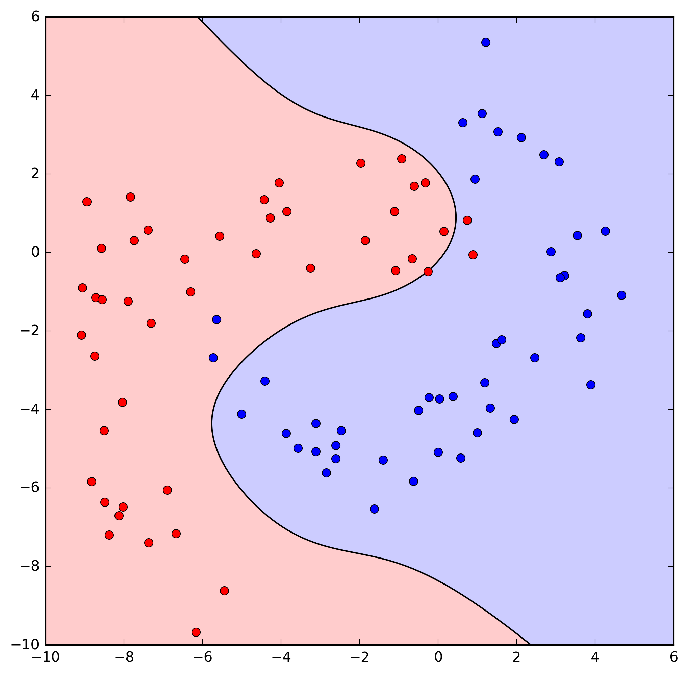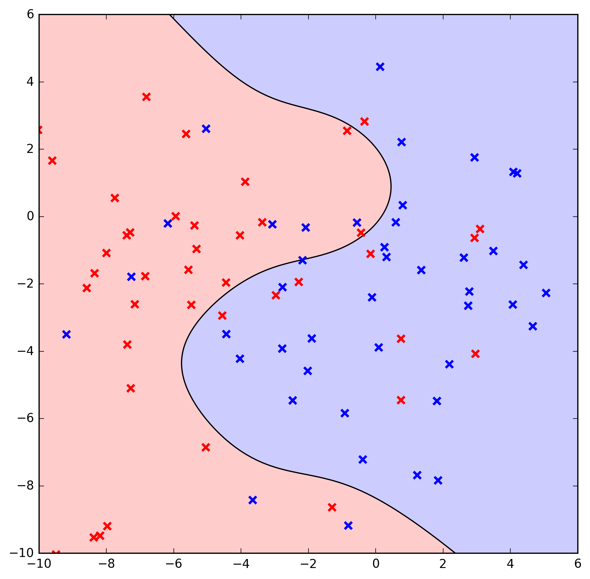
Aprendizagem Automática
Comparing classifiers
Comparing classifiers
- Log.Reg., k-NN, Naïve Bayes
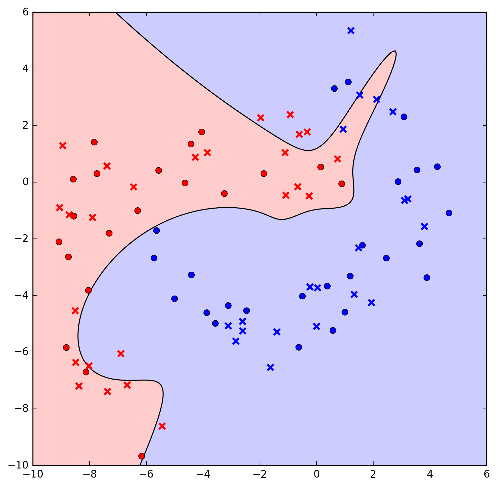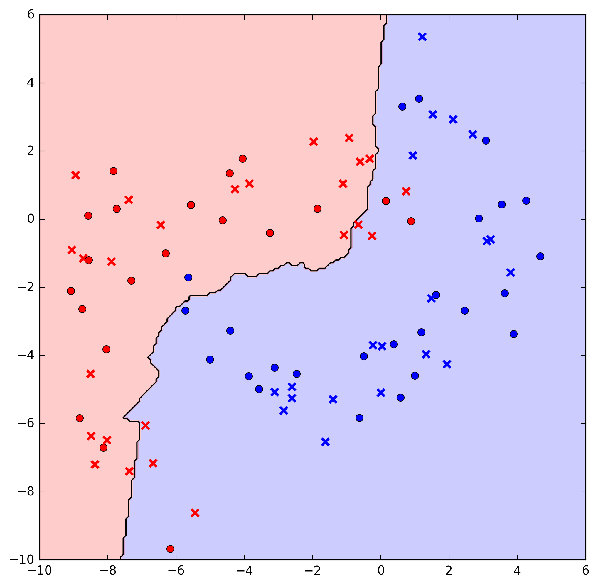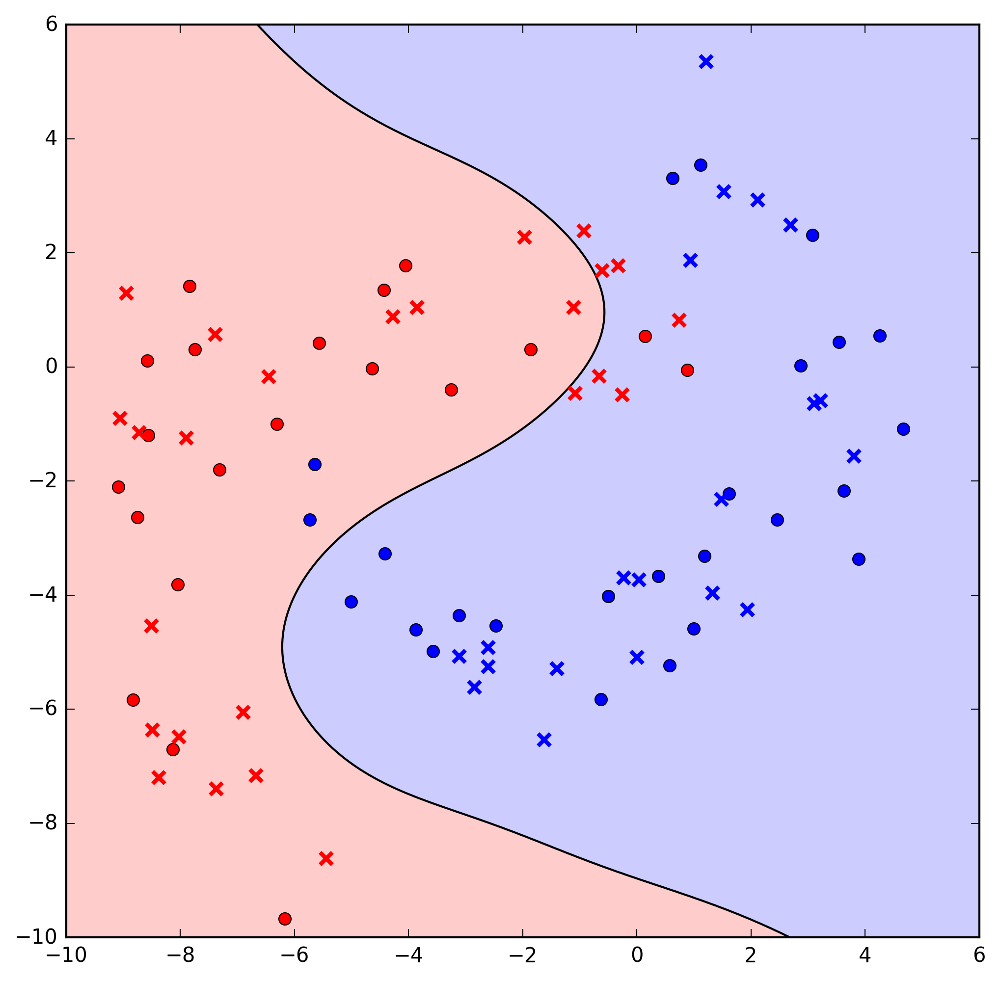
- Test set, 45 points
- Logistic Regression, 10 errors; k-NN, 6 errors; Naïve Bayes, 1 error
Which one is better?
Comparing classifiers
Aproximate normal test
- Assume errors normally distributed around true error rate:
- Test if intervals are disjoint with some confidence level (e.g. 95%)
- Logistic Regression:
10±5.4 - k-NN:
6±3.5 - Naïve Bayes:
1±1.9
Comparing classifiers
Better alternative: McNemar's test
-
e01 ande10 : count examples wrong in one and correct in the other - McNemar's test, 95% confidence, significant difference if:
- Logistic Regression vs kNN = 0.8
- kNN vs Naïve Bayes = 2.3
- Naïve Bayes vs Logistic Regression = 7.11
- Conclusion: Naïve Bayes likely better than Logistic Regression
Naïve Bayes
Processing Data
Processing Data
Data can come in many forms
- Target values: Classification vs Regression
- Continuos or discrete features
- Different distributions
Main goal: predict for new examples
- Train on some data, validate and test on other data
How about rescaling?
- Should we compute scale parameters (normalization, standardization) for training set or training folds?
Processing Data
Rescaling parameters
- In theory: these are parameters computed from data
- We should compute on training data and apply to validation or test
- However, statistics like the mean converge rapidly
- In practice it makes little difference, so we do it only once
- (In general...)
Processing Data
Rescaling parameters
- Example: 2000 points, split 1000/10000, compute mean
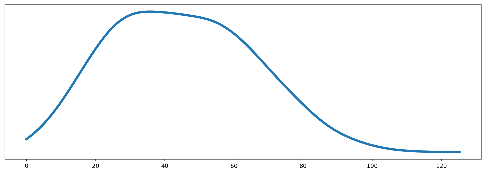
- Means diverge by 0.014 of standard deviation
- Computing for each training fold or whole set nearly the same
Processing Data
Splitting the data
- But things may be more complicated.
- Example: 2000 values, money spent on transportation
Processing Data
Splitting the data
- Data comes from 6 different cities
- Example: 2000 values, money spent on transportation
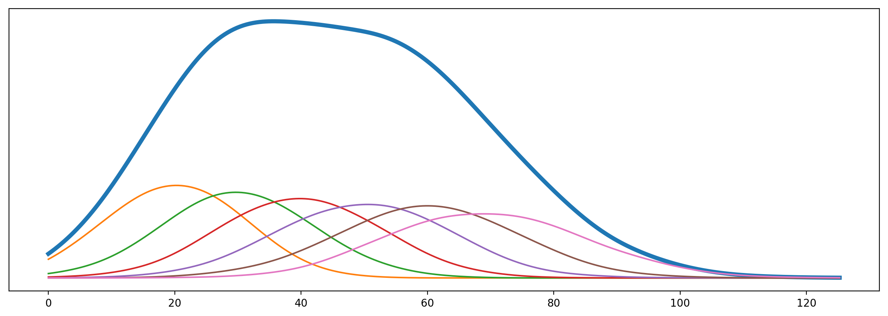
- How should we split the data and compute scaling parameters?
Processing Data
- Case 1:
- Examples can come from any city
- We want to predict for new examples in these cities
- We can shuffle the data and if the data set is large enough we can rescale everything once
- For cross validation or testing, better to stratify
- Keep the same proportion of data from each city
Processing Data
- Case 2:
- We know the city each example comes from
- We want to predict for new examples in other cities
- Different cities have different distributions
Processing Data
- Case 2:
- We know the city each example comes from
- We want to predict for new examples in other cities
- Different cities have different distributions
- We need to consider the generalization from some cities to others
- We should split by city (and eventually shuffle before training)
- Rescaling should be done for training data only because statistics will differ
Processing Data
What to take from this
- Do not memorize recipes
- This may lead you to incorrect results
- Understand what you are doing
- Main focus of this course
Naïve Bayes
Summary
Aprendizagem Automática
Summary
- Bayes Classifier and Naïve Bayes Classifier
- Parametric and non-parametric models
- Generative and Discriminative classifiers
- Comparing classifiers
- Processing data: understand what you are dealing with
Further reading
- Bishop, Section 1.2
- Alpaydin, Section 14.6
- Mitchell, Section 6.9
- Marsland, Section 8.1.2
Aprendizagem Automática
7. Naïve Bayes classifier
Ludwig Krippahl